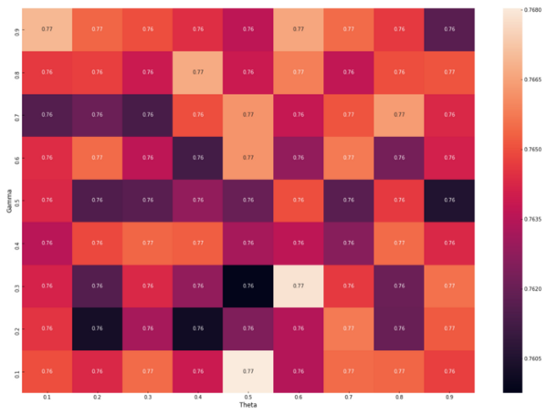
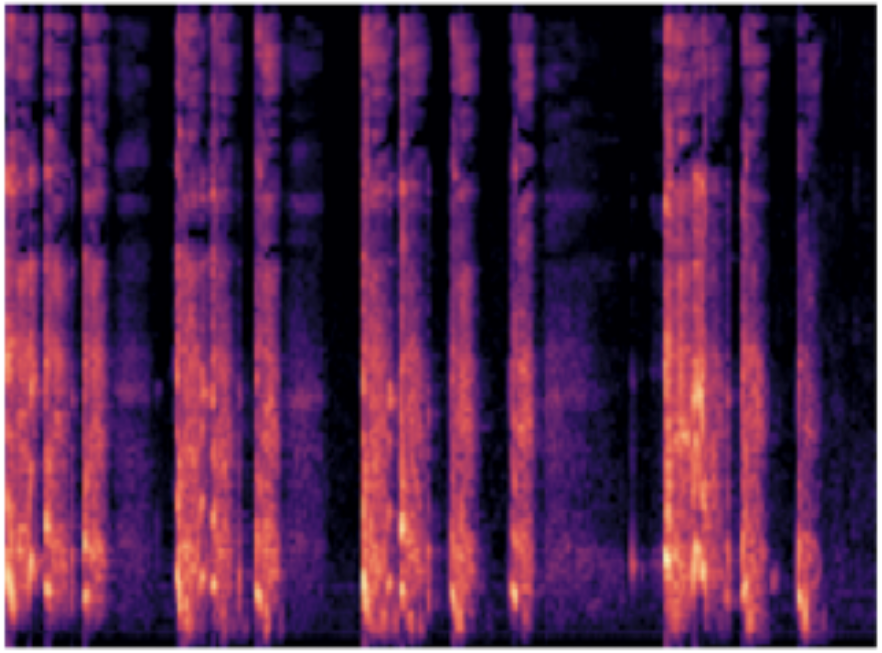
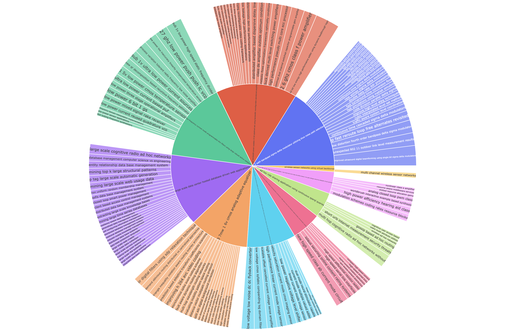
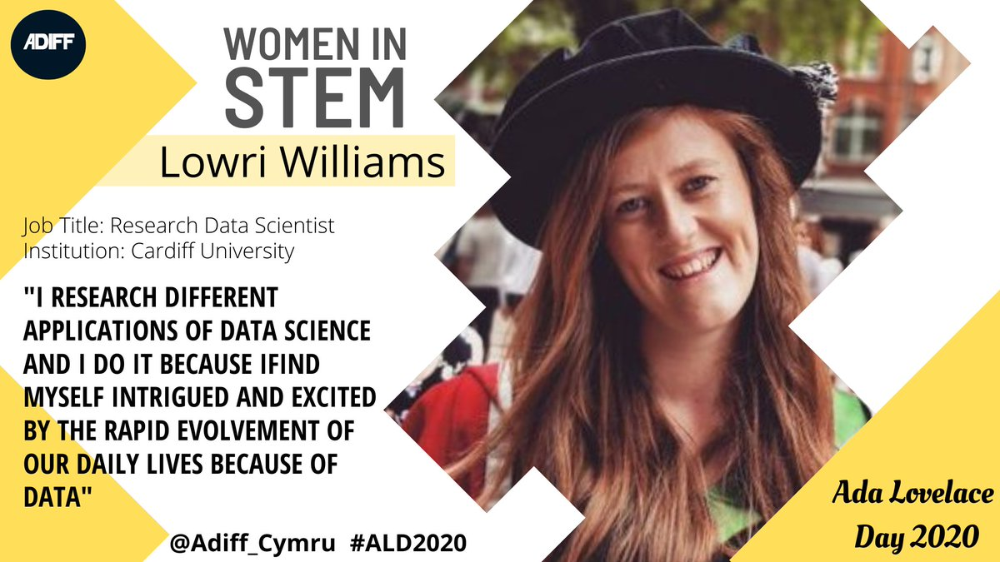
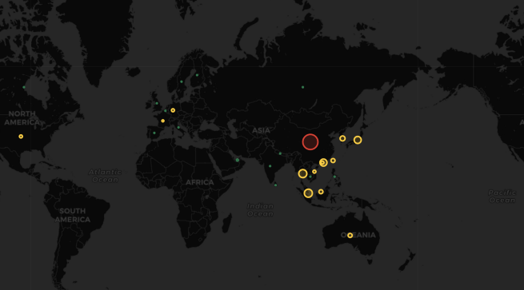

Dr Lowri Williams
Cardiff University
Cardiff University
A research data scientist with 4 years of experience in academic research and 2 years in industry-based collaborations supporting small-medium businesses with novel data science solutions.
Collaborated with multidisciplinary experts and contributed to research outputs and findings within several reputable academic journals within disciplines such as natural language processing and cybersecurity.
Research areas and interests: natural language processing, data/text mining, sentiment analysis, language resources, machine learning, adversarial machine learning, feature engineering, classification, classification schemes, data science.
2019 - 2021
Research Associate - Data Scientist
Cardiff University
The Data Innovation Accelerator supports small medium businesses to apply data science techniques to produce tangible benefits.
2017 - 2019
Research Assistant
Cardiff University
CorCenCC is a collection of language samples gathered from real-life communication to support Welsh speakers, learners, and researchers.
2013 - 2017
Doctor of Philosophy (PhD)
Funded by EPSRC Doctoral Training Partnership.
2021 - Current
Guest Associate Editor
A member of the editorial board of the Social Data Science: Using Social Networks Data for Social Impact journal.
2020 - Present
Voluntary Editor
A member of the editorial team for Towards Data Science, a Medium publication sharing data science concepts, ideas, and code.
E Anthi, L Williams, A Javed, P Burnap. Computers & Security, Volume 108, 2021.
E Anthi, L Williams, P Burnap, K Jones. Journal of Cybersecurity, Volume 7, Issue 1, 2021.
E Anthi, L Williams, M Rhode, P Burnap, A Wedgbury. Journal of Information Security and Applications, Volume 58, 2021.
L Williams, M Arribas-Ayllon, A Artemiou, I Spasić. Journal of Classification 36 (3), 619-648. 2019.
E Anthi, L Williams, M Słowińska, G Theodorakopoulos, P Burnap. IEEE Internet of Things Journal 6 (5). 2019.
E Anthi, L Williams, P Burnap. Living in the Internet of Things: Cybersecurity of the IoT-2018 (pp. 1-4). IET. 2018.
I Spasić, L Williams, A Buerki. IEEE Transactions on Affective Computing 11 (2), 189-199. 2017.
L Williams, C Bannister, M Arribas-Ayllon, A Preece, I Spasić. Expert Systems with Applications 42 (21), 7375-7385. 2015.
L Williams. PhD Thesis. Cardiff University. 2017.
Portal COVID-19 Cymru reports daily Welsh COVID-19 data and statistics from different sources.
Spotify Sentiment Analysis applies sentiment analysis to your favourite songs in your Spotify playlist.
What is WordNet and why is it useful?
Investigating sentiment analysis and topic modelling techniques.

An investigation into the role of idioms in sentiment analysis.

Applying adversarial learning to target SMS spam detectors.

Analysing and classifying real patient cough sounds.

An investigation into how to assign topics with meaningful titles.

An analysis on Rugby Six Nations data.


